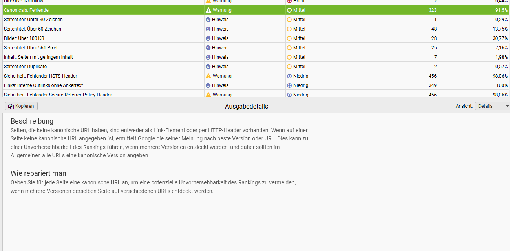
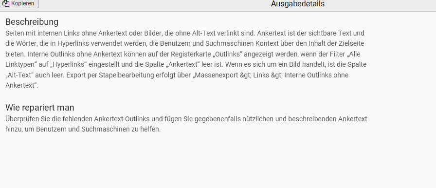
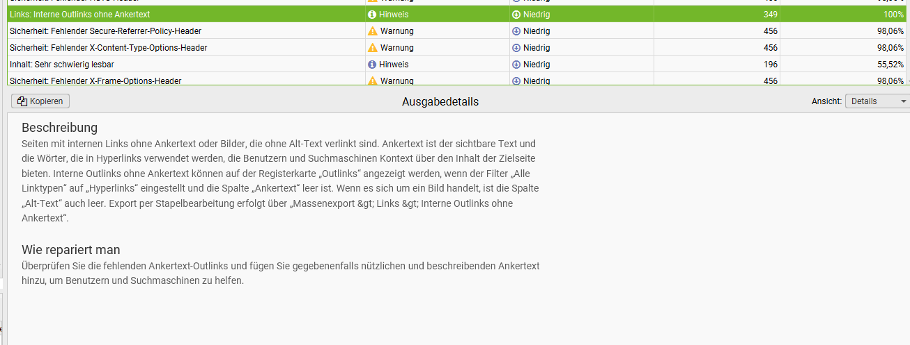
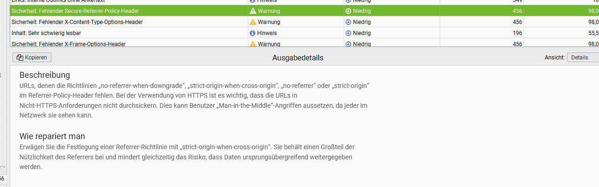
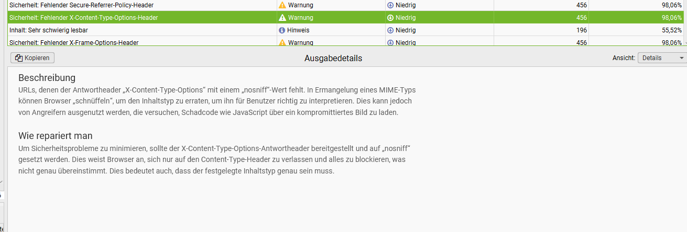
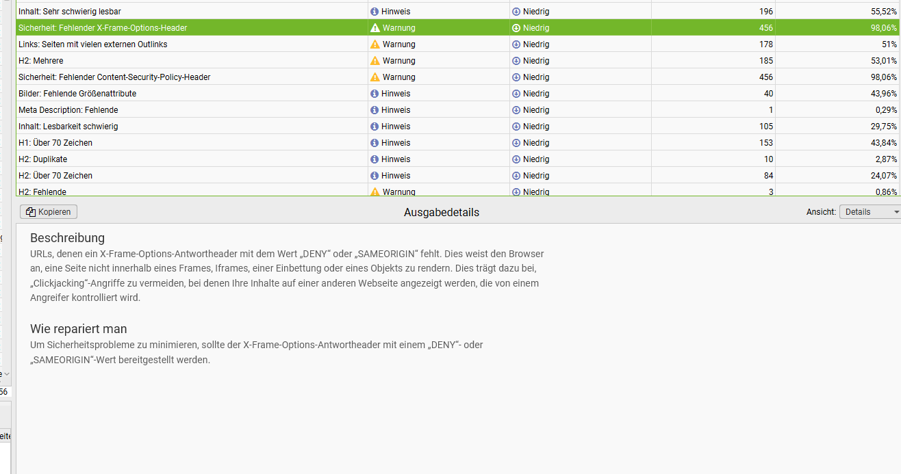
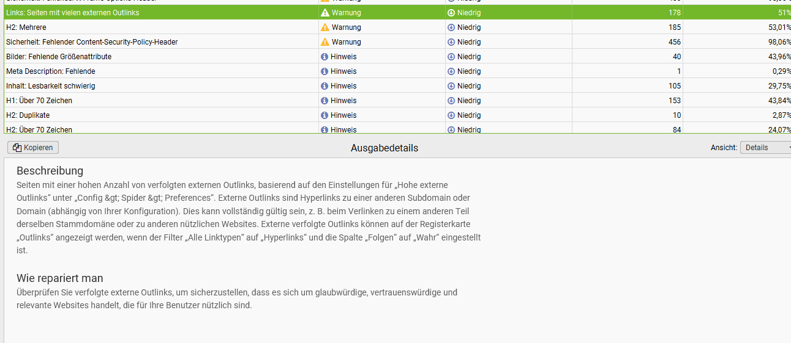
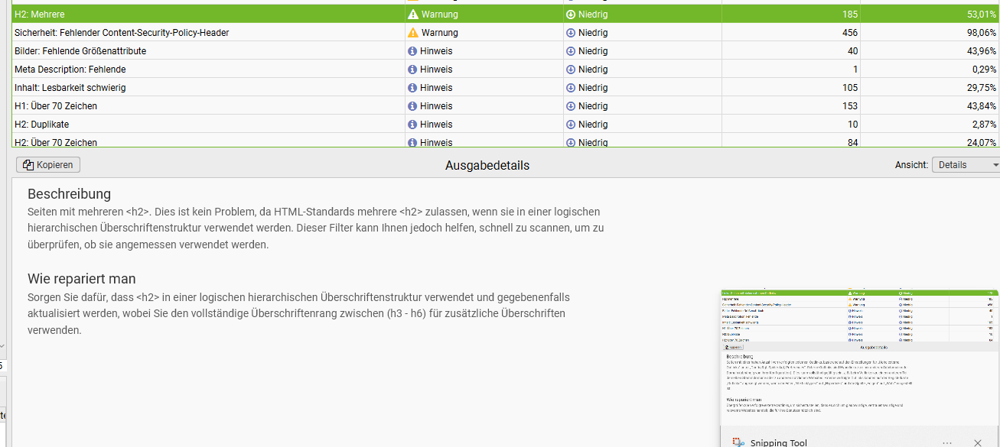
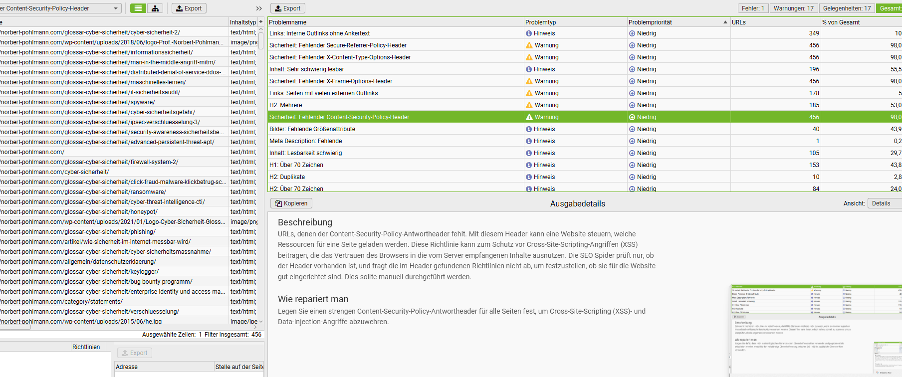
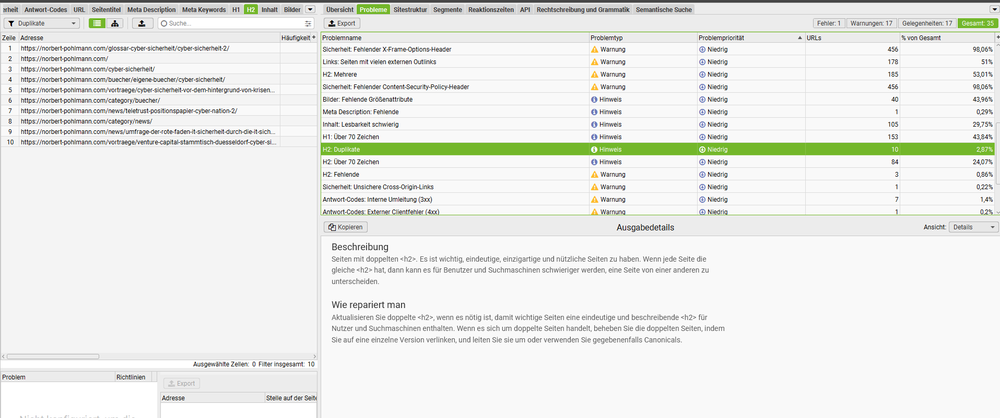

SEO- & GEO-Audit der Glossarseite „Cyber-Sicherheit“
Konsolidierte Auswertung von sechs unabhängigen Prüfquellen mit eigener Live-Verifikation. Jeder Befund dieses Berichts ist mit dem Original-Nachweis verlinkt — Tool-Reports als PDF, Screenshots und Live-Analysen.
Executive Summary
Die Glossarseite ist inhaltlich bereits nahe am GEO-Ideal — zitierfähige Definition, FAQ-Block, starke E-E-A-T-Signale. Der entscheidende Engpass liegt jedoch davor: KI-Crawler werden auf Server-Ebene ausgesperrt, sodass alle Content-Optimierungen aktuell wirkungslos bleiben.
Alle 21 geprüften KI-Crawler werden auf Server-/Firewall-Ebene blockiert
GPTBot, ClaudeBot, PerplexityBot, Google-Extended und weitere erhalten den Status „Disallow“ — obwohl die robots.txt sie ausdrücklich per Allow: / freigibt. Der robots.txt-Check meldet „N/A“: Die Bot-Anfragen erreichen die Datei gar nicht erst. Solange die Blockade besteht, können ChatGPT, Perplexity, Gemini und Claude die Inhalte weder abrufen noch zitieren. Details und Nachweise in Kapitel 02.
Kernbefund: KI-Crawler-Blockade auf Server-Ebene
Der Otterly-Crawlability-Audit prüft zweistufig: (1) Server Access Check — antwortet der Server dem Bot-User-Agent überhaupt? (2) robots.txt Check — was erlaubt die robots.txt? Das Ergebnis ist eindeutig und widersprüchlich zugleich.
Alle 21 geprüften Crawler erhalten Status „Disallow“; der robots.txt-Check meldet für alle Bots „N/A“ — die Anfragen werden vorgelagert abgewiesen.
Insgesamt 21 geprüfte Crawler — sämtlich mit Status „Disallow“.
Dieselben Bots werden in der robots.txt ausdrücklich freigegeben — die Blockade greift also vor der robots.txt auf Server-/Firewall-Ebene:
# KI-Crawler # OpenAI User-agent: GPTBot User-agent: ChatGPT-User User-agent: OAI-SearchBot Allow: / # Anthropic / Claude User-agent: ClaudeBot User-agent: anthropic-ai (u. a.) Allow: / # Perplexity / Google Gemini analog: Allow: /
Live-Verifikation (05.07.2026): Ein direkter Abruf von Start- und Glossarseite war erfolgreich (Volltext inkl. Meta-Daten). Die Blockade ist demnach selektiv — sehr wahrscheinlich eine User-Agent-basierte Firewall- oder Bot-Protection-Regel (WAF, Hoster-Bot-Schutz oder Security-Plugin), die exakt die offiziellen Crawler-Kennungen trifft.
Auswirkung und Behebung
Auswirkung: ChatGPT (Suche), Perplexity, Gemini und Claude können die Glossarseiten nicht live abrufen — keine frischen Zitierungen, kein Ranking in KI-Antworten; llms.txt- und Content-Optimierungen bleiben wirkungslos. Der Brand-Report bestätigt: Zitiert werden fast nur ältere bzw. indirekte Quellen der Domain, nicht die Glossarseiten.
Behebung: (1) Hoster bzw. Administrator beauftragen, Firewall-, WAF- und Security-Plugin-Regeln auf User-Agent-Sperren zu prüfen (typische Kandidaten: Hoster-Bot-Schutz, Cloudflare „Block AI Bots“, ModSecurity, Wordfence/Sucuri). (2) Die 21 Bot-User-Agents explizit freigeben. (3) Dreifache Verifikation: erneuter Otterly-Audit, Server-Logfile-Kontrolle (GPTBot/ClaudeBot mit Status 200?), Testabruf via curl mit Bot-User-Agent.
Performance — Google PageSpeed Insights
Desktop ist mit 98/100 nahezu perfekt. Mobil verfehlt der LCP mit 4,4 s den Google-Grenzwert von 2,5 s deutlich — Hauptursachen sind render-blockierende CSS-Ressourcen (−1.920 ms möglich) und unoptimierte Bilder (−202 KiB möglich).
Desktop
Sehr gutReport vom 05.07.2026, 22:48 Uhr · Lighthouse 13.4.0 · Live-Report
Mobile
HandlungsbedarfReport vom 05.07.2026, 22:45 Uhr · Moto G Power, Slow 4G · Live-Report
Core Web Vitals (Labormessung)
| Metrik | Desktop | Mobile | Zielwert | Bewertung Mobile |
|---|---|---|---|---|
| First Contentful Paint (FCP) | 0,5 s | 2,4 s | < 1,8 s | überschritten |
| Largest Contentful Paint (LCP) | 1,1 s | 4,4 s | < 2,5 s | deutlich überschritten |
| Total Blocking Time (TBT) | 0 ms | 0 ms | < 200 ms | bestanden |
| Cumulative Layout Shift (CLS) | 0 | 0 | < 0,1 | bestanden |
| Speed Index | 0,5 s | 2,4 s | — | solide |
Mobiler LCP — belegte Ursachen und Einsparpotenziale
| Befund (PageSpeed-Original) | Detail | Potenzial |
|---|---|---|
| Render-blocking requests | autoptimize-CSS 47,4 KiB / 600 ms · FontAwesome all.css (use.fontawesome.com) 12,5 KiB / 750 ms | −1.920 ms |
| Improve image delivery | cyber-sicherheit-zusammenhang-768x461.png 115,7 KiB (−97,3 KiB via WebP/AVIF + responsive) · Logo-Glossar 918 × 913 px ausgeliefert für 56 × 55 px Darstellung (−51,7 KiB) | −202 KiB |
| Reduce unused JavaScript | autoptimize-Bundle | −70 KiB |
| Reduce unused CSS | Report verweist explizit auf die WP-Rocket-Optionen „Remove Unused CSS“ und „Delay JavaScript execution“ | −52 KiB |
| LCP-Element | TOC-Link „2. Taxonomie …“ (ez-toc) · Element render delay 240 ms (Messwert) | — |
| Font display | FontAwesome-Webfonts ohne font-display: swap | −20–30 ms |
Maßnahmenpaket Mobile: WebP/AVIF und korrekte srcset-Größen · WP Rocket „Remove Unused CSS“ und „Delay JS“ aktivieren · FontAwesome lokal hosten bzw. auf ein Subset reduzieren · preconnect für verbleibende Drittquellen. Realistisches Ziel: LCP < 2,5 s.
Accessibility und Agentic Browsing (GEO-relevant)
KI-Agenten navigieren Seiten über den Accessibility-Tree — der Agentic-Browsing-Check (2/3) meldet diesen als „not well-formed“ und benennt exakt die Elemente aus der Live-Analyse: Navbar-Button ohne Namen, Menü- und Footer-Links ohne erkennbaren Namen. Weitere belegte Punkte: unzureichender Farbkontrast im ez-toc-Inhaltsverzeichnis, Links nur über Farbe unterscheidbar, fehlende <main>-Landmark, tabindex="1" (Mobile), zu kleine Touch-Targets (Desktop). Positiv bestanden: llms.txt-Formatcheck, CLS = 0, Überschriften-Reihenfolge, alt-Attribute vorhanden.
Technischer SEO-Crawl — Screaming Frog
Vollständiger Domain-Crawl über 456 URLs. Ergebnisleiste des Tools: Fehler: 1 · Warnungen: 17 · Gelegenheiten: 17 · Gesamt: 35 Problemtypen. Die Tabelle zeigt die priorisierten Befunde; darunter die Original-Beschreibungen des Tools inklusive Behebungsempfehlung.
Priorisierte Befundtabelle
| Befund (Problemname lt. Tool) | Typ | URLs | Anteil | Priorität |
|---|---|---|---|---|
| Canonicals: Fehlende | Warnung | 323 | Hoch | |
| Links: Interne Outlinks ohne Ankertext | Hinweis | 349 | Hoch | |
| Sicherheit: Fehlender HSTS- / CSP- / X-Frame- / X-Content-Type- / Referrer-Policy-Header (je) | Warnung | 456 | Mittel | |
| Inhalt: Sehr schwierig lesbar | Hinweis | 196 | Mittel | |
| H2: Mehrere (Hierarchie prüfen) | Warnung | 185 | Mittel | |
| Links: Seiten mit vielen externen Outlinks | Warnung | 178 | Niedrig | |
| H1: Über 70 Zeichen | Hinweis | 153 | Mittel | |
| Inhalt: Lesbarkeit schwierig | Hinweis | 105 | Niedrig | |
| H2: Über 70 Zeichen | Hinweis | 84 | Niedrig | |
| Seitentitel: Über 60 Zeichen / über 561 px | Hinweis | 48 / 25 | Mittel | |
| Bilder: Fehlende Größenattribute / über 100 KB | Hinweis | 40 / 28 | Niedrig / Mittel | |
| Inhalt: Seiten mit geringem Inhalt | Hinweis | 7 | Niedrig | |
| H2: Duplikate / Fehlende · Umleitungen (3xx) intern / Clientfehler (4xx) extern | Warnung | 10 / 3 · 7 / 1 | Niedrig | |
| Meta Description: Fehlende | Hinweis | 1 | Niedrig |
Canonicals: Fehlende 323 URLs · 91,5 %
„Wenn auf einer Seite keine kanonische URL angegeben ist, ermittelt Google die seiner Meinung nach beste Version oder URL. Dies kann zu einer Unvorhersehbarkeit des Rankings führen, wenn mehrere Versionen entdeckt werden.“
Einordnung: Bei den historisch gewachsenen „-2“-Duplikat-URLs (cyber-sicherheit-2, firewall-system-2, trusted-computing-2, ipsec-verschluesselung-3 …) ein reales Duplicate-Content-Risiko. Behebung: selbstreferenzierende Canonicals global aktivieren (Yoast-Standardfunktion) — live verifiziert fehlt das Tag derzeit.
Links: Interne Outlinks ohne Ankertext 349 URLs · 100 %
„Ankertext ist der sichtbare Text und die Wörter, die in Hyperlinks verwendet werden, die Benutzern und Suchmaschinen Kontext über den Inhalt der Zielseite bieten. Wenn es sich um ein Bild handelt, ist die Spalte ‚Alt-Text‘ auch leer.“
Einordnung: Betroffen sind vor allem verlinkte Bilder und die Kachel-Navigation. Ankertexte sind zugleich Kontextsignal für LLMs — doppelter GEO-/SEO-Nutzen bei Behebung.
Sicherheit: Fünf fehlende Security-Header je 456 URLs · 98,1 %
Sitewide fehlen: HSTS, Content-Security-Policy (XSS-Schutz), X-Frame-Options („DENY“ oder „SAMEORIGIN“, Clickjacking-Schutz), X-Content-Type-Options („nosniff“) und Referrer-Policy („strict-origin-when-cross-origin“).
Einordnung: Für eine Cyber-Sicherheits-Autorität auch ein Reputationsthema; zentral per .htaccess/nginx in einer Maßnahme für alle 456 URLs lösbar. PageSpeed listet dieselben Punkte unter „Trust and Safety“.
Überschriften-Struktur: H2 mehrere / fehlende / Duplikate / zu lang bis 185 URLs
„Sorgen Sie dafür, dass <h2> in einer logischen hierarchischen Überschriftenstruktur verwendet werden … den vollständigen Überschriftenrang zwischen (h3–h6) für zusätzliche Überschriften verwenden.“
Einordnung: Zusätzlich sind 153 H1 länger als 70 Zeichen, auf 3 Seiten fehlt die H2 ganz. Deckt sich mit dem Live-Befund, dass Abschnittsüberschriften der Glossarseite nur als Fettdruck statt als echte h2/h3 ausgeliefert werden (Kapitel 06, Befund B).
Links: Seiten mit vielen externen Outlinks 178 URLs · 51 %
„Überprüfen Sie verfolgte externe Outlinks, um sicherzustellen, dass es sich um glaubwürdige, vertrauenswürdige und relevante Websites handelt.“
Einordnung: Kann vollständig legitim sein (Quellenverlinkung), sollte aber stichprobenartig geprüft werden.
Screenshot-Galerie — Original-Nachweise aus dem Tool

Canonicals: Fehlende (323 · 91,5 %)
Outlinks ohne Ankertext — Beschreibung
Outlinks ohne Ankertext (349 · 100 %)
Fehlender Referrer-Policy-Header (456)
Fehlender X-Content-Type-Options (456)
Fehlender X-Frame-Options + Problemliste
Viele externe Outlinks (178 · 51 %)
H2: Mehrere (185 · 53 %)
Fehlender CSP-Header + Ergebnisleiste
H2: Duplikate + Gesamtliste (35 Typen)robots.txt und llms.txt — Eigenanalyse
Die robots.txt wurde zeilenweise gegen RFC 9309 und die Google-Spezifikation geprüft: konzeptionell vorbildlich, aber mit einem Syntaxfehler. Die llms.txt besteht zwar den formalen PageSpeed-Check, ist inhaltlich jedoch weitgehend entwertet — die wertvollsten Abschnitte enthalten nur leere Links.
PageSpeed bestätigt: „robots.txt is not valid — 1 error found. Pattern should either be empty, start with ‘/’ or ‘*’.“ Der führende Schrägstrich fehlt — die Regel ist ungültig und wird von Crawlern ignoriert.
# Zeile 14: Disallow: wp-content/uploads/2019/08/Social- Web-Cyber-Sicherheit-…-18_03_20.pptx
Führenden „/“ ergänzen; zusätzlich lassen sich die über 60 einzelnen .pptx-Zeilen durch ein Wildcard-Muster (RFC 9309) ersetzen:
Disallow: /wp-content/uploads/2019/08/Social- Web-Cyber-Sicherheit-…-18_03_20.pptx # oder alle 60+ Zeilen ersetzen durch: Disallow: /wp-content/uploads/2019/08/*.pptx
Weitere robots.txt-Befunde
- KI-Sektion korrekt aufgebaut: Gruppen mit mehreren User-agent-Zeilen und gemeinsamem
Allow: /sind syntaktisch zulässig; abgedeckt sind OpenAI (3 Bots), Perplexity (2), Anthropic (4), Google-Extended. Ergänzenswert: Applebot-Extended, Meta-ExternalAgent. - Konsistenz: Die robots.txt verweist auf
/sitemap.xml, die llms.txt auf/sitemap_index.xml— beide Angaben vereinheitlichen. - Einordnung: Die robots.txt ist nicht die Ursache der Crawler-Blockade aus Kapitel 02 — sie erlaubt die Bots ja. Die Blockade greift vorgelagert auf Server-/Firewall-Ebene.
# Prof\. Dr\. Norbert Pohlmann <- Defekt 3: Escapes Generated by Yoast SEO v27.6, … ## Seiten - [Copyright der Bilder]() <- Defekt 1: URL fehlt - [Übungen]() <- Defekt 1 - [Cyber\-Sicherheit]() <- Defekt 1 + 3 ## Beiträge - [Serious Games … ISMS]() <- Defekt 1 ## Schlagwörter - [c](…/tag/c/) - [s](…/tag/s/) <- Defekt 2: Ein-Buchstaben-Tags (Datenrauschen)
Bewertung: Ausgerechnet „Seiten“ und „Beiträge“ — die inhaltlich wertvollsten Abschnitte — enthalten ausschließlich Links ohne Ziel-URL und sind für ein LLM damit nutzlos. Kein einziger der rund 100 Glossarbegriffe ist einzeln gelistet.
# Prof. Dr. Norbert Pohlmann – Cyber-Sicherheit > Glossar, Artikel und Lehrmaterial des > Informatikprofessors für Cyber-Sicherheit, > Leiter des Instituts für Internet-Sicherheit. ## Glossar Cyber-Sicherheit (Kernbegriffe) - [Cyber-Sicherheit](…/glossar-cyber- sicherheit/cyber-sicherheit-2/): Definition, Abgrenzung, Taxonomie, FAQ - [KI-Agent](…/glossar-cyber-sicherheit/ ki-agent/): Definition, Sicherheitsrisiken - … (weitere 15–30 wichtigste Begriffe mit 1-Zeilen-Beschreibung) ## Optional - [Sitemap](…/sitemap_index.xml)
Umsetzung: Yoast-Generierung prüfen bzw. aktualisieren (die leeren Links deuten auf einen Bug oder eine Fehlkonfiguration hin) oder die llms.txt manuell kuratieren — manuell ist für GEO ohnehin die bessere Praxis.
Live-Analyse der Glossarseite
Ergänzend zu den Tool-Reports wurde die Muster-URL am 05.07.2026 direkt abgerufen und der ausgelieferte Quellinhalt analysiert — Stärken und Schwächen im direkten Vergleich.
Positiv verifiziert — GEO-Stärken
- Zitierfähige Kerndefinition im ersten Satz: „Cyber-Sicherheit (auch Cyber Security oder Internet-Sicherheit) umfasst alle Aspekte der IT-Sicherheit, erweitert deren Aktionsfeld jedoch auf den gesamten Cyber-Raum.“ — in sich geschlossen, ideal für Featured Snippets und LLM-Zitate; die Meta-Description (118 Zeichen) transportiert dieselbe Kernaussage.
- E-E-A-T-Signale vollständig: Autorenbox (Informatikprofessor für Cyber-Sicherheit, Leiter des Instituts für Internet-Sicherheit), sichtbares Stand-Datum 24.06.2026, Meta modified 2026-06-24 als Aktualitätssignal.
- Belegte Quellen: Springer-Lehrbuch (ISBN), Bitkom-Studie Wirtschaftsschutz 2025, BSI-Lagebericht 2025.
- FAQ-Block mit fünf präzisen Frage-Antwort-Paaren (inkl. NIS2/DSGVO-Bezug) und Vergleichstabelle Cyber Security vs. IT-Sicherheit.
- Dichte interne Verlinkung in rund 45 Glossarbegriffe.
Live verifizierte Schwächen — Befunde A–D
- A — H1 und Title verwässert: H1 „Cyber-Sicherheit - Prof. Dr. Norbert Pohlmann“ — der Autorenname gehört nicht in die H1. Empfehlung: H1 „Was ist Cyber-Sicherheit?“, Title „Was ist Cyber-Sicherheit? Definition, Abgrenzung & Beispiele“. Deckt sich mit Screaming Frog (153 H1 über 70 Zeichen).
- B — Inhalt in Layout-Tabelle, keine echten Headings: Abschnittsüberschriften („2. Taxonomie …“) erscheinen als Fettdruck statt als h2/h3 — Suchmaschinen und LLMs können die Gliederung maschinell nur eingeschränkt erkennen.
- C — Kein Canonical, Schema unvollständig: Kein
rel="canonical"im Head (deckungsgleich mit PageSpeed und Screaming Frog). Article-Schema vorhanden, aber FAQPage- und DefinedTerm-Markup fehlen — beides starke, leicht nachrüstbare Signale. - D — Nicht crawlbare Navigations-Links:
<a href="javascript:void(0);">(Menü) und<a href="#">(Footer) — identisch mit dem PageSpeed-Befund „Links are not crawlable“. Empfehlung:<button>-Elemente statt Anker.
GEO-Content-Readiness — Otterly.AI
Die Content-Analyse bescheinigt der Seite 100 % statisch lesbaren Inhalt („Amazing, most of your content is not dynamic and readable by LLM Crawlers“). Die Readiness liegt bei 73 %, Structured Data bei 85 % — der Block „Content“ ist mit 66 % der schwächste.
Gesamt-Scores
Strukturdaten im Detail
Schwächste Readiness-Kriterien
Kein „Key Takeaways“-Feld — Kernaussagen-Box mit 3–5 Punkten direkt nach der Einleitung ergänzen.
Unnötige Duplikate (Definitions-Bild erscheint zweimal, ähnliche Textbausteine) — reduzieren, Synonyme gezielt nutzen.
Neutrale Zusatzquellen empfohlen: ENISA, NIST Cybersecurity Framework, BSI-Überblick.
IAM, SIEM, DoH, SSI erscheinen ohne unmittelbare Erklärung — beim ersten Vorkommen kurz definieren.
Wenige quantitative Angaben — ein bis zwei statistische Kernaussagen (BSI-/ENISA-Zahlen) ergänzen.
FAQs stehen relativ weit unten — als „Schnellantworten“ weiter nach oben.
Abgeleiteter Content-Bauplan für die Musterseite
Kernaussagen-Box → Definition → Taxonomie mit Tabelle → belegte Statistik (BSI-/Bitkom-Zahl im Text) → FAQ mit FAQPage-Schema weiter oben → Quellen inkl. ENISA/NIST. Die Tool-Empfehlungen decken sich mit der Live-Analyse: Die Quellen Bitkom/BSI sind bereits verlinkt, aber keine Zahl daraus wird im Text genannt; der FAQ-Block ist stark, sitzt aber tief.
KI-Sichtbarkeit — Otterly Brand-Report
Der Brand-Report quantifiziert die Folgen der Crawler-Blockade: nur 3 % Brand Coverage. Die Domain liegt mit 4 % Citation Share auf Platz 3 — und zitiert werden fast nur Buchseite, ein PDF und die Startseite, nicht die Glossarseiten.
Domain-Ranking nach KI-Zitierungen
| Rang | Domain | Zitierungen | Citation Share |
|---|---|---|---|
| 1 | bsi.bund.de | 27 | |
| 2 | link.springer.com | 21 | |
| 3 | norbert-pohlmann.com | 17 | |
| 4 | internet-sicherheit.de | 15 | |
| 5 | hanser-fachbuch.de | 11 | |
| 6 | amazon.de | 11 | |
| 7 | springerprofessional.de | 10 | |
| 8 | shop.heise.de | 9 | |
| 9 | dpunkt.de | 9 | |
| 10 | books.google.com | 9 |
Eigene Top-URLs in KI-Zitierungen
| # | URL | Zitierungen |
|---|---|---|
| 1 | /cyber-sicherheit (Buchseite) | 5 |
| 2 | /wp-content/…/Bewerbung_Lehrbuch_Cyber-Si… (PDF) | 4 |
| 3 | /home (Startseite) | 2 |
Kein einziges Top-Zitat verweist auf eine Glossarseite.
Interpretation und Benchmark
Zusammen mit dem Blockade-Befund ergibt sich ein konsistentes Bild: Die vorhandene Sichtbarkeit speist sich aus Trainingsdaten und älteren Indexständen, nicht aus Live-Abrufen der optimierten Glossarinhalte. Die Zahlen — Coverage 3 % · Share 4 % · Platz 3 — sind der Benchmark für das monatliche Monitoring nach Umsetzung der Maßnahmen.
Priorisierter Maßnahmenplan
Reihenfolge: Maßnahmen 1–4 zuerst (technische Grundfreischaltung, wenige Stunden), 5–8 im nächsten Wartungsfenster, 9–11 im Zuge der Musterseiten-Erstellung. Erst nach Maßnahme 1 entfalten alle übrigen GEO-Maßnahmen messbare Wirkung.
Firewall-, WAF- und Bot-Schutz-Regeln auf User-Agent-Sperren prüfen, 21 Bot-User-Agents freigeben. Verifikation: Otterly-Re-Audit, Server-Logfiles, curl-Test. Nachweis: Kapitel 02
Zeile 14: führenden „/“ ergänzen; .pptx-Liste durch Wildcard ersetzen; Sitemap-Angabe vereinheitlichen. Nachweis: Kapitel 05
Leere Links füllen, Escape-Zeichen entfernen, Ein-Buchstaben-Tags streichen, 15–30 Kern-Glossarbegriffe mit URL und Kurzbeschreibung aufnehmen. Soll-Beispiel: Kapitel 05
323 Seiten betroffen; live verifiziert fehlend. Yoast-Standardfunktion. Nachweis: Kapitel 04
WebP/AVIF und responsive srcset, WP Rocket „Remove Unused CSS“ / „Delay JS“, FontAwesome lokal bzw. als Subset. Nachweise: Kapitel 03
Durch <button>-Elemente bzw. echte URLs ersetzen (live verifiziert). Befund D: Kapitel 06
Inhalt aus der Layout-Tabelle lösen, echte h2/h3; H1 als Frage ohne Autorname; Title mit Suchintention; FAQPage- und DefinedTerm-Schema ergänzen. Befunde A–C: Kapitel 06
HSTS, CSP, X-Frame-Options, X-Content-Type-Options (nosniff), Referrer-Policy — eine .htaccess/nginx-Maßnahme für alle 456 URLs. Nachweis: Kapitel 04
Beschreibende Ankertexte für Kacheln und verlinkte Bilder — doppelter SEO-/GEO-Nutzen.
Kernaussagen-Box, FAQ höher platzieren, ein bis zwei belegte BSI-/Bitkom-Zahlen im Text, ENISA-/NIST-Links, Akronym-Einführung, Bild-Duplikat entfernen. Nachweis: Kapitel 07
Button- und Link-Namen, ez-toc-Kontrast, <main>-Landmark, tabindex, Touch-Targets. Nachweis: Kapitel 03
Monatlicher Brand-Report (Benchmark: 3 % Coverage / 4 % Share / Platz 3), KI-Referrer in Analytics, Bot-Logfile-Kontrolle.
Fazit
Inhaltlich ist die Glossarseite bereits nahe am GEO-Ideal — zitierfähige Definition, FAQ, Autorität, Aktualität, Quellen. Der Engpass ist der Zugang: Eine User-Agent-selektive Server-Blockade sperrt exakt die offiziellen KI-Crawler aus, während die robots.txt sie einlädt — flankiert von einer inhaltlich leeren llms.txt und fehlenden Canonicals. Diese Kombination erklärt vollständig, warum trotz hochwertiger Inhalte nur 3 % Brand Coverage erreicht werden. Nach Umsetzung der Maßnahmen 1–7 kann die Seite im Wettbewerb um KI-Zitierungen mit bsi.bund.de und Springer konkurrieren — und dient dann als belastbare Musterseiten-Vorlage für das gesamte Glossar.
Nachweise und Anhang
Vollständiges Verzeichnis aller Original-Quellen dieses Audits — Reports als PDF, Tool-Screenshots und Live-Links.
Reports (PDF)
- PDFSEO- & GEO-Audit-Bericht v2.0 (Hauptbericht, 17 Seiten)
- PDFPageSpeed Insights — Desktop (22:48 Uhr, 39 Seiten)
- PDFPageSpeed Insights — Mobile (22:45 Uhr, 37 Seiten)
- PDFOtterly.AI — Crawlability-Audit (Server Access + robots.txt Check)
- PDFOtterly.AI — Content-Analyse (Readiness + Structured Data)
- PDFOtterly.AI — Brand-Report (Citations, Coverage, Share)
Live-Reports und geprüfte URLs
Tool-Screenshots (Originale)
- IMGOtterly Server Access Check — alle Bots „Disallow“
- IMGllms.txt im Browser — leere Link-Klammern sichtbar
- IMGScreaming Frog 01 — Canonicals: Fehlende (323)
- IMGScreaming Frog 02 — Outlinks ohne Ankertext (Beschreibung)
- IMGScreaming Frog 03 — Outlinks ohne Ankertext (349)
- IMGScreaming Frog 04 — Fehlender Referrer-Policy-Header (456)
- IMGScreaming Frog 05 — Fehlender X-Content-Type-Options (456)
- IMGScreaming Frog 06 — Fehlender X-Frame-Options (456)
- IMGScreaming Frog 07 — Viele externe Outlinks (178)
- IMGScreaming Frog 08 — H2: Mehrere (185)
- IMGScreaming Frog 09 — Fehlender CSP-Header + Ergebnisleiste
- IMGScreaming Frog 10 — H2: Duplikate + Gesamtliste (35 Typen)